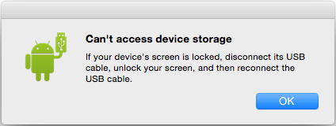

Riké Franklin
Professional and Technical Writer
Sideloading to Kindle App Using Android File Transfer
Assumptions- You are sideloading from Mac OS.
- You are sideloading a *.mobi file; (see KindleGen)
- You have the Android File Transfer.app
- Connect your Android device to the Mac using a USB cable.
- Wait for the Android File Transfer.app to load.
- Look for Kindle folder in the Android File Transfer window
- Drag the *.mobi file into the kindle folder.
- Open the Kindle app to see sideloaded file in the Library carousel, or under Docs
Note: this is standard file transfer between drives. The time required to complete the transfer depends on how big the .mobi file is being transfered.
Troubleshooting:
Depending on your android device, you may get the following alert:
“Can’t access device storage If your device’s screen is locked, disconntect its USB cable, unlock your screen and then reconnect the USB cable”
If you get this alert and cannot access your files
- Click okay to close the alert.
- Unlock your device if it’s not unlocked already.
- Access your notifications by dragging your finger down from the top of the screen
- Tap "USB for charging: Touch for more options”.
- Select File Transfers: Transfer files to Windows or Mac (MTP) option in the new window.
- Proceed to transferring your file by dragging your .mobi file to the kindle folder.
- Once the transfer is complete, quit the Android File Transfer.app program to eject the device.
This new sideloaded file should appear first in the Library carousel, or you can select the Docs section of the library.
Note: If your sideloaded file does not appear in your Kindle library. Restart your Android device then open the Kindle app.